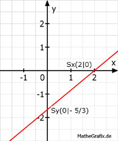

Lineare Funktionen Aufgabe 52 In welchen Punkten schneiden die Geraden die Koordinatenachsen? 5x - 6y - 10 = 0 Für alle Punkte auf der y-Achse gilt x = 0 Für alle Punkte auf der x-Achse gilt y = 0 5x - 6y - 10 = 0 |+6y 5x - 10 = 6y | :6 5 5 y = --- x - --- 6 3 5 5 5 y = --- * 0 - --- = - --- 6 3 3 5 Sy(0| - --- ) 3 5 5 5 0 = --- x - --- | + --- 6 3 3 5 5 --- = --- x * 6 3 6 10 = 5x | :5 x = 2 Sx(2|0) 